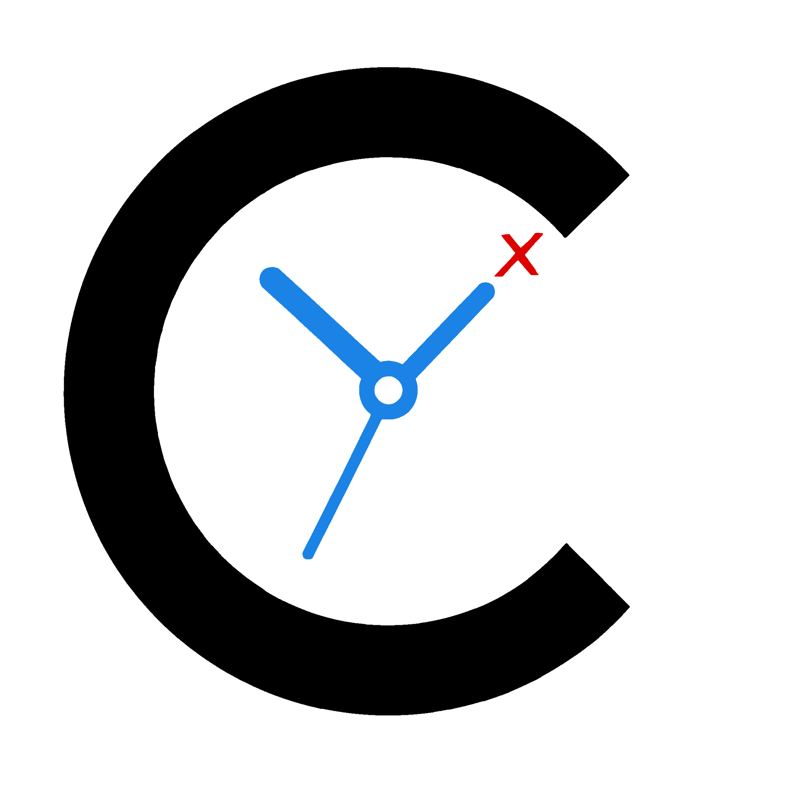
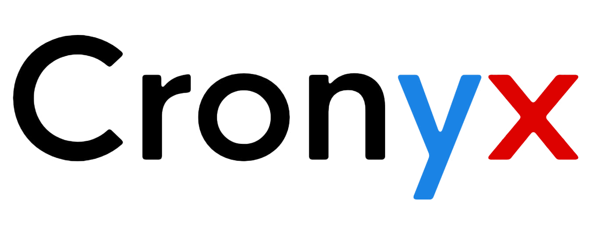

Cronyx™
The Matrix of Time


Dependency System
• Eventi Primitivi – elementi fondamentali che influenzano altri eventi.
• Eventi Derivati – eventi che dipendono da primitivi e si aggiornano di conseguenza.
• Gestione automatica delle modifiche in cascata.
Drag 'n Drop
• Trascina gli eventi tra le celle del calendario.
• Sposta eventi tra giorni, settimane e mesi.
• Supporto per eventi ripetuti e singole occorrenze.
Graph
• Visualizzazione 3D delle dipendenze tra eventi.
• Rotazione, zoom e pan interattivi.
• Colori e dimensioni differenziati per tipo di evento.
MainWindow
• Vista mensile con eventi visualizzati in timeline.
• Navigazione tra mesi e anni.
• Drag & drop integrato.
• Menu laterale con accesso rapido a tutte le funzionalità.
Languages
• Supporto per 35 lingue nazionali europee.
• Ricerca avanzata per nome, codice ISO o parole chiave.
• Fatti curiosi sulle nazioni.
• Barra di navigazione alfabetica.
Profile Picture
• Immagine profilo personalizzabile (file o colori).
• Nome utente modificabile.
• Preview in tempo reale.
Screenshot
• Cattura istantanea di tutte le finestre Cronyx.
• Effetto flash durante lo scatto.
• Salvataggio automatico nella cartella Download.
Tag System
• Crea, rinomina ed elimina etichette.
• Assegna tag agli eventi.
• Visualizza tutti gli eventi associati a un tag.
• Colori personalizzabili per ogni tag.
Event Views
• EventDay – tutti gli eventi del giorno con timer in tempo reale.
• EventWeek – panoramica settimanale con ordinamento.
• EventMonth – visione mensile completa.
Notifiche & Toast
• Notifiche personalizzate per eventi imminenti.
• Timer e animazioni "In corso".
• Supporto per notifiche di sistema Windows.
EventDetails
• Visualizzazione dettagliata di un evento con nome, orario, descrizione e notifiche.
• Allegati e link cliccabili.
• Copia descrizione con un clic.
• Temi speciali per eventi come Natale, Capodanno, San Valentino e Halloween.
CreateNewEvent
• Creazione di nuovi eventi con nome, orario, descrizione e colore.
• Gestione di ripetizioni (Per, Ogni) e notifiche personalizzate.
• Allegati drag-and-drop e tag.
• Sistema di dipendenze per eventi Primitivi e Derivati.